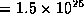
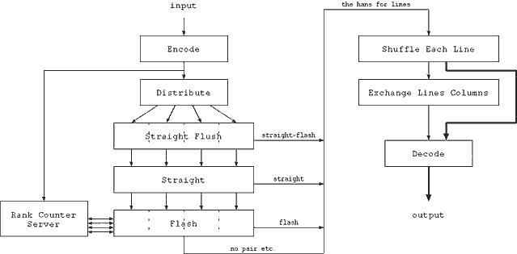

Next: 解説・アルゴリズム
Up: No Title
Previous: 目的
総当たり的な探索をできるだけ使わず、高速に解を出力することを設計の指針
とした。なぜなら、もし全ての配置の得点を計算すると、25!

もの評価が必要となるように、総当たり的な探索では高速に良い
得点を出すのは難しいと判断したためである。
(制限時間が固定でなかったことも高速性を設計の指針に据えた一因である)
高速に解を出力するために以下のような基本戦略を立てた：
- 4 of a kind, Full House, 3 of a kind, 2 Pair, Pair 等のペア系の
手役と Straight Flush, Flush, Straight の非ペア系の役との直交性
を利用して問題を分割する。具体的には、非ペア系の役を行に配置し、
ペア系の役を列に配置するようにする。
- Straight Flush は非常に得点が高いため優先して配置する。
- Flush, Straight が多くなる組合せを見つけて、行に配置する。
- 行内の入れ換えで列方向の得点が大きくなるようにする。
- 行、列同士の入れ換えでは行や列の得点合計が変わらないことを利用
して斜めの得点を大きくする。これは、行、列の役の合計点を大きく
する問題と、斜めの得点を大きくする問題が分離できることを意味し
ている。まず行と列の役を決定した後で、斜めの得点を大きくするこ
とにする。
4 of a kind も非常に得点が高いが、優先的に配置すると他の役の配置のアル
ゴリズムが繁雑になるため、優先的には配置しない。しかし、4 of a kind が
できることをあまり阻害しないように他の役を配置するようにプログラムする
必要がある。
Figure: 全体図
